Dans cette partie de rapport, nous parlerons de comment fonctionne l’installation de Debian sur une machine virtuel
Pour l’installation de Debian nous avons eu besoin de créer une machine virtuel.
Pour le bon fonctionnement de la machine nous avons besoin de caractéristique spécifique ou minimum :
Pour créer notre machine virtuel nous avons utilisez l’application VM Virtual Box.
Maintenant l’étape de la création pour cela il faut appuyer sur le
bouton Nouvelle.
Puis entrer les information demander.
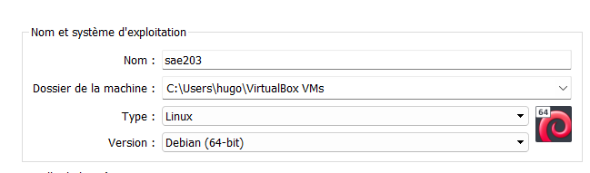
Puis il faut allouer la mémoire vive. 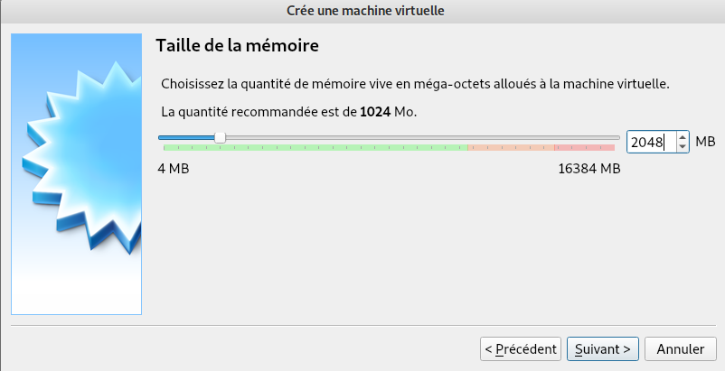
Et enfin l’allocation de la taille du disque dur.
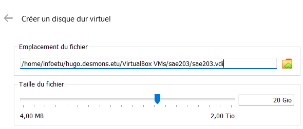
Et pour reste on a laisser les paramètre de défaut.
Nous avons maintenant une machines prête a l’installation de
Debian 64-bit.
Dans l’architecture informatique, les entiers 64 bits, les adresses mémoire ou d’autres unités de données sont ceux qui ont une largeur de 64 bits. De plus, les processeurs et ALU 64 bits sont ceux qui sont basés sur des registres de processeur, des bus d’adresses ou des bus de données de cette taille.
La configuration réseau utilisé par défaut est : Intel PRO/1000 MT
Desktop (NAT)
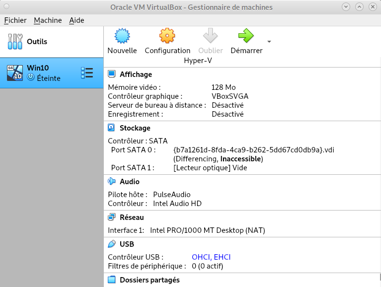
Dans le fichier contenu dans les dossier de la machine virtuel : sae203.vbox-prev
Pour modifier le nombre cpu il faut aller a
la ligne de CPU count=“1” et remplacer le 2 par le
nombre de processeur voulu.
Pour le modifier on a utiliser des commandes système car on n’arrivé pas
a modifier le fichier on a copié son contenu dans un fichier texte, puis
modifier la ligne requise et enfin on a forcé le contenu du fichier
texte dans le fichier sae203.vbox-prev
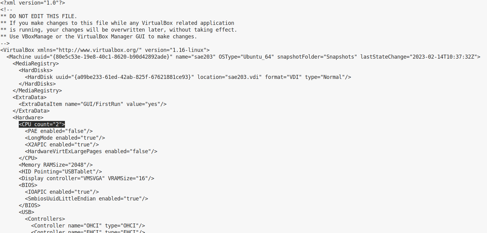
il existe aussi un autre moyen de changer le nombre de cpu en allant
dans les paramètres de la machine virtuel depuis VM VirutalBox.
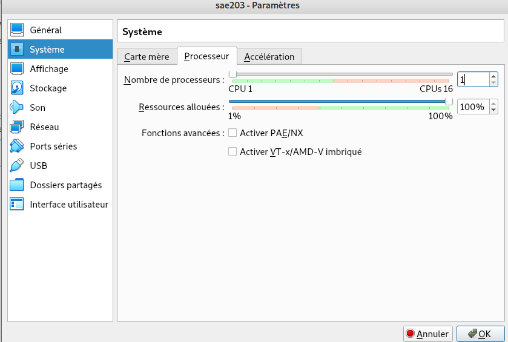
Pour l’installation de Debian nous avions des paramètre a respecter :
Maintenant la machine créer nous allons l’avons démarrer et VM
VirtualBox nous a demander d’ajouter un fichier iso.
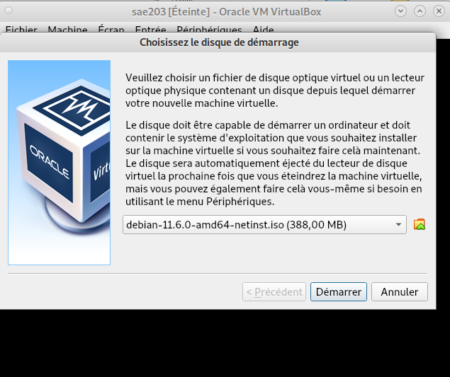
Une fois cela fait nous pouvons enfin procéder a l’installation de
Debian.
Nous avons choisit l’installation graphique.
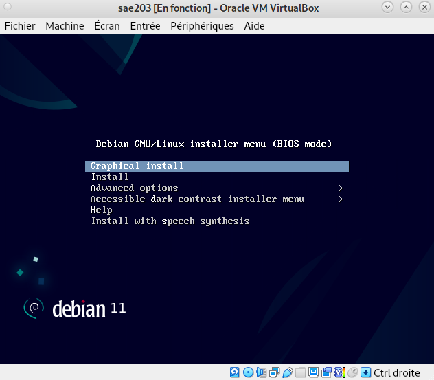
La première étape est le choix du nom de la machine.
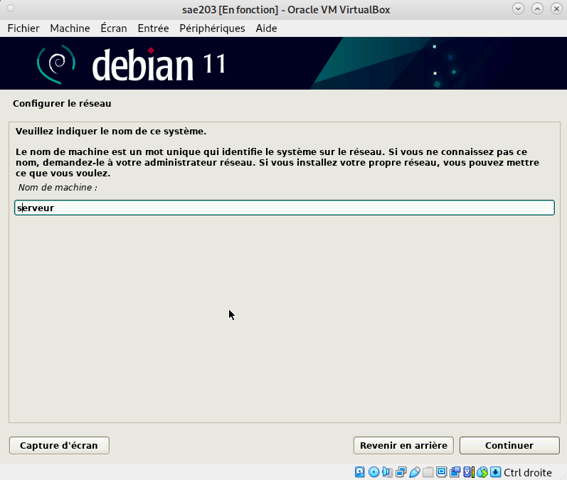
La deuxième est le choix du mot de passe de l’user root.
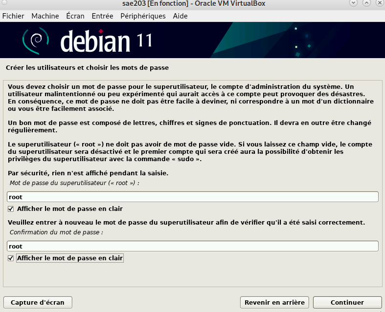
Ensuite le choix du miroir.
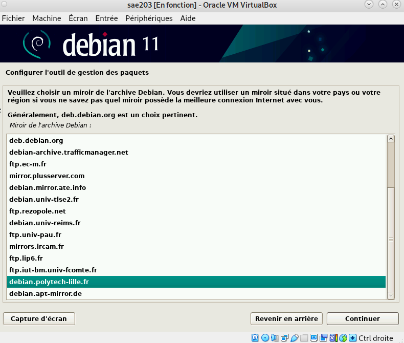
Et pout finir le choix des logiciel a installer. 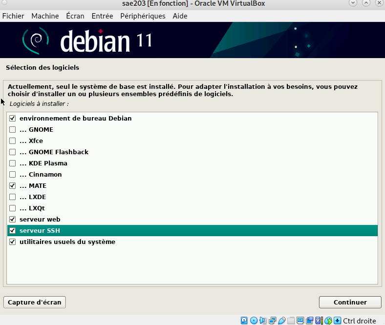
Un fichier iso bootable est un fichier image créé à partir d’un CD ou
d’un DVD il contient les informations nécessaire pour démarrer un
ordinateur.
Iso : image CD
Mate est un environnement de bureau libre utilisant (dans un premier
temps) la boîte à outils GTK+ 3.x et destiné aux systèmes d’exploitation
apparentés à UNIX.
Gnome à l’origine un acronyme pour GNU Network Object Model Environnent,
est un environnement de bureau libre et open-source pour Linux et
d’autres systèmes d’exploitation de type Unix[11].
Tout type de serveur qui permet de diffuser des contenues Web sur Internet ou Intranet
SSH™ (ou Secure SHell) est un protocole qui facilite les connexions sécurisées entre deux systèmes à l’aide d’une architecture client/serveur et permet aux utilisateurs de se connecter à distance à des systèmes hôte de serveurs.
Un serveur mandataire filtre les sites Web que vous consultez. Il reçoit les requêtes de votre navigateur pour récupérer les pages Web demandées avec leurs éléments et, dans le respect des règles édictées, décide de vous les transmettre ou non.
Passer en mode console : Ctrl + Alt + F1.
Se connecter en root en utilisant les paramètre utiliser lors de
l’installation de Debian dans notre cas: login = root et mot de passe
root
Puis ajouter le groupe sudo à votre principal grâce a la commande
$ sudo adduser “user” -G sudo
Pour ajouter les suppléments invités, nous allons devoir compiler des programmes. Il nous faut donc des outils de compilation et les fichiers d’en-têtes du noyaux linux utilisé :
Insérer le cd des suppléments : Périphériques › Insérer l’image CD
des additions invités…
Monter le CD avec la commande sudo mount /dev/cdrom
/mnt
Installer les suppléments en utilisant sudo
/mnt/VBoxLinuxAdditions.run
Puis rebooter votre machine est vous avez maintenant une machine
utilisable.
Il suffit d’utiliser la commande compgen -u
Il permet l’intégration du pointeur de la souri, et la création de Dossiers partagé.
Avant d’utiliser Debian en profondeur, une petite introduction a son histoire s’impose !
Debian est un système d’exploitation GNU/Linux présentant deux caractéristiques principales : - C’est la distribution libre qui offre le plus de stabilité pour les outils GNU et le noyau Linux . - C’est une distribution non commerciale suffisamment crédible pour concurrencer les distributions commerciales .
GNU/Linux Debian est également un système d’exploitation multi-plates-formes.
La prononciation officielle de Debian est « déb-yann ». Le nom tire son origine des prénoms du créateur de Debian, Ian Murdock, et de son épouse, Debra.
Effectivement il existe 3 durées de prise en charge d’une version de Debian avec chacun leur type de version :
L’équipe en
charge de la sécurité essaye de prendre en charge
la distribution stable environ
une année après que la version stable suivante a été
publiée, sauf lorsqu’une autre distribution stable est publiée la même
année. Il n’est pas possible de prendre en charge trois
distributions, c’est déjà bien assez difficile avec deux.
Comme vu précédemment différentes versions sont
activement maintenues par Debian, il y a toujours au moins trois
versions activement entretenues : “stable”, “testing” et “unstable”.
Jusqu’ici les noms de code proviennent des personnages des films « Toy Story » par Pixar. Voici un tableau des noms de code utilisé jusqu’à présent, ainsi que leurs signification :
| Version Debian | Nom | Signification |
|---|---|---|
| Debian 1.1 | buzz | est le cosmonaute Buzz Lightyear |
| Debian 1.2 | rex | est le tyrannosaure |
| Debian 1.3 | bo | est Bo Peep, la bergère |
| Debian 2.0 | hamm | est la tirelire en forme de cochon |
| Debian 2.1 | slink | est Slinky Dog, le chien |
| Debian 2.2 | potato | est bien sûr, Mr. Patate |
| Debian 3.0 | woody | est le cowboy |
| Debian 3.1 | sarge | est le sergent de l’armée de plastique vert |
| Debian 4.0 | etch | est l’ardoise magique (Etch-a-Sketch) |
| Debian 5.0 | lenny | est la paire de jumelles |
| Debian 6 | squeeze | est le nom des extraterrestres à 3 yeux |
| Debian 7 | wheezy | est le nom du manchot au nœud papillon rouge |
| Debian 8 | jessie | est l’écuyère |
| Debian 9 | stretch | est le nom de la pieuvre avec des ventouses sur ses tentacules. |
| Debian 10 | buster | était le chien de compagnie d’Andy. |
| Debian 11 | bullseye | était le cheval de bois de Woody. |
| Debian 12 | bookworm | était un ver de terre vert équipé d’un flash et qui adore lire des livres. |
| Debian 13 | trixie | était un triceratops bleu en plastique |
| Futur Debian | sid | est le garçon des voisins qui casse tous les jouets. |
Debian 11 (Bullseye) prend en charge de nombreuses architecture, voici ci-dessous la liste des architectures officiellement prises en charge par Debian 11 :
Maintenant que nous avant une connaissance accrue de Debian, et que l’on sait l’installer et l’utiliser. Il est intéressant de se pencher sur le déploiement a grande échelle de ce système d’exploitation.
Afin d’automatiser l’installation, il nous faut utiliser un “.iso” différent et d’autres fichiers en plus.
Ici le fichier de configuration automatisée pour une Debian (et ses
dérivées) est le plus
important. Il est souvent nommé preseed.cfg, il est
capable de faire s’executer certaine commandes
d’installations automatiques a Debian.
On peut alors lancer l’installation d’une nouvelle machine à partir de Debian, et de des fichiers d’installations personnalisés. 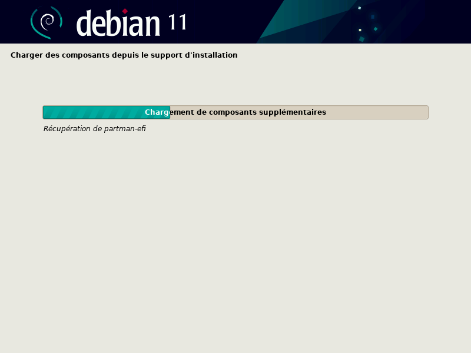 L’installation étant déjà configurée, aucune intéraction avec l’utilisateur n’est nécessaire, l’installation est bien automatique. 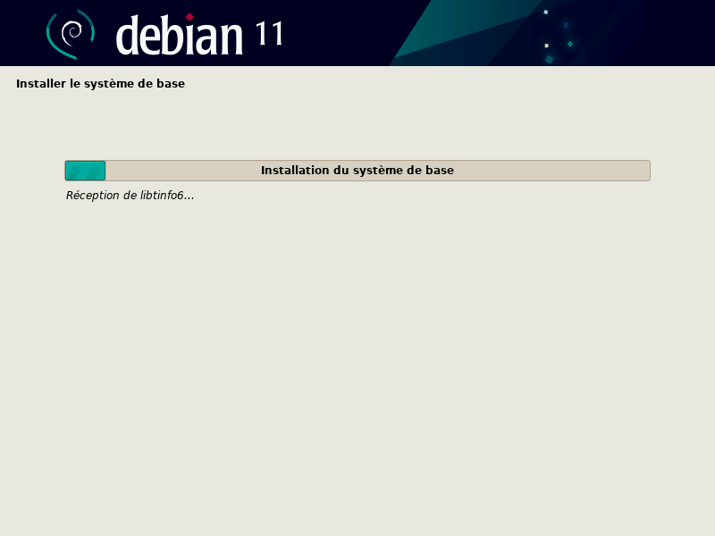 Mais, cette installation ne comporte aucune interface graphique, ni aucun outil dont nous avant besoin. Nous devrons alors modifier le fichiers pressed.cfg pour correspondre à nos besoins.
Certains utilisateurs sont déja créer et configurés grace à pressed.cfg.
On peut vouloir ajouter les droits administrateurs à un utilisateur, les droits “sudo”, représenté par un groupe d’utilisateur ayant ces droits. Il nous suffit donc de rajouter sudo dans les groupes de déja configurés.
La ligne :
d-i passwd/user-default-groups string audio cdrom videoDevient :
d-i passwd/user-default-groups string audio cdrom video sudoCet affichage en ligne pourrait paraitre hostère pour un utilisateur qui n’est pas informaticien, c’est alors logique que l’on cherche à rajouter un environnement graphique.
Debian permet d’être configuré a l’avance avec un environnement graphique, ici on va utiliser MATE. En utilisant la commande tasksel, qui est une application d’installation de logiciels faisant partie intégrante de l’installeur Debian. Tasksel regroupe les paquets à installer par tâches (ex. serveur LAMP, création audio, etc).
On peut alors utiliser tasksel pour rajouter MATE Grace a la ligne :
tasksel tasksel/first multiselect standard mate-desktopEvidemment une commande existe pour l’ajoute de “paquet supplementaires, ou tout autres programmes nécessaire.
pkgsel fonctionne comme tasksel, mais pour les paquets.
Ici nous avons besoins de : - Sudo (sinon la gestion sudo est inutile) - Git - Sqlite3 - Curl - Bash-completions - Neofetch
Il nous suffit simplement d’ajouter ce dont nous avont besoin a la suite de :
d-i pkgsel/include string Ce qui donne :
d-i pkgsel/include string sudo git sqlite3 curl bash-completion neofetchAu final nous en avons apprit sur Debian et son histoire. Mais nous avons aussi apprit à configurer une installation Debian, et a l’automatiser en modifiant pressed.cfg . Ce qui donne :
Dans cette partie de rapport, nous parlerons de comment fonctionne l’utilmisation de Gitea sur une machine virtuelle
Précédemment, nous avons installé plein de services nécessaires à cette partie de la Saé, nous avons donc une machine virtuelle avec une Debian 11.6 avec au moins mate-desktop, git, et sqlite3 installé
Git est installé mais il n’est pas configuré, pour le configurer il faut :
Pour ceci nous entrons les commandes :
git config --global user.name "Prénom Nom"
git config --global user.email "votre@email"
git config --global init.defaultBranch "master" Par la suite nous aurons besoin de git-gui et gitk
Mais d’abord il est intéressant de se questionner sur leurs
fonctionnement :
Gitk est un navigateur de dépôt graphique. Il peut être considéré comme un encapsuleur graphique pour git log . Il permet d’explorer et de visualiser l’historique d’un dépôt.
L’exécution de la commande gitk* lancera l’interface utilisateur de gitk, dans le terminal
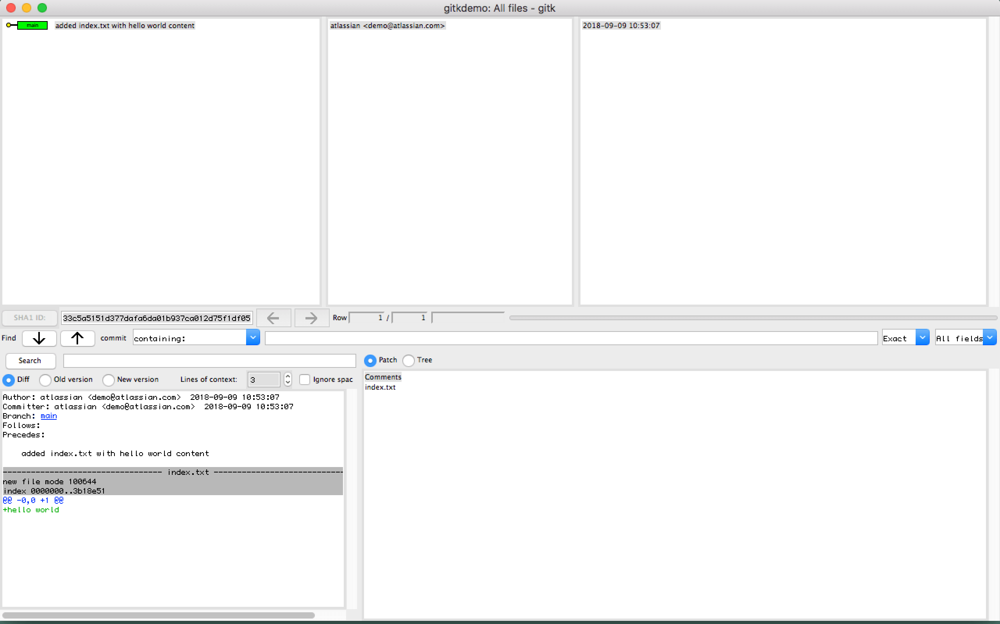
C’est un interface graphique permettant d’utiliser git, de façon plus accessoble
Pour lancer Git gui, il y a plusieurs possibilités. Soit en ligne de
ccommande :
git gui soit, sous debian via le menu alt+F2, puis ecrire
git gui.
Pour installer git gui, on peut simplement utiliser apt : 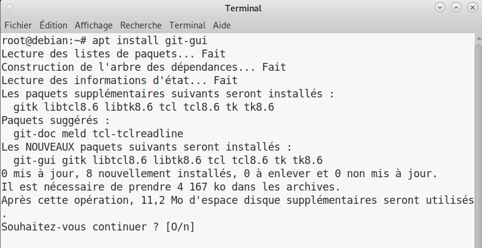
Dans cette partie de rapport, nous parlerons de comment fonctionne l’utilmisation de Gitea sur une machine virtuelle
Précédemment, nous avons installé plusieurs services nécessaires à cette partie de la Saé, nous avons donc une machine virtuelle avec Debian 11 et au moins mate-desktop, git, et sqlite3 installé
Ici, nous nous intéresserons donc à l’installation de Gitea (voir section 2)
Tout d’abord, renseignons-nous sur le service Gitea
Gitea est un service Git auto-hébergé très simple à installer et à utiliser. Il est similaire à GitHub, Bitbucket ou Gitlab. Le but de ce projet est de fournir de la manière la plus simple, la plus rapide et sans complication un service Git auto-hébergé, fonctionnant sur toutes les plateformes , y compris Linux, macOS et Windows, même sur des architectures comme ARM ou PowerPC. [source :https://docs.gitea.io/fr-fr/]
Gitea peut être comparé à :
Gitea n’est pas installable sous forme de paquet debian mais il est quand même assez simple via de multiples solutions décrites dans la documentation [https://docs.gitea.io/] :
Nous allons donc installer Gitea avec un binaire précompilé.
Un site officiel [https://docs.gitea.io/en-us/install-from-binary/] permet de suivre cette installation en plusieurs étapes
Pour telecharger Gitea, la version de git doit être supérieure ou égale à 2.0, pour connaître la notre il faut faire git –version, ici git est suffisamment à jour
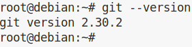
Il y a plusieurs façons de faire ce téléchargement:
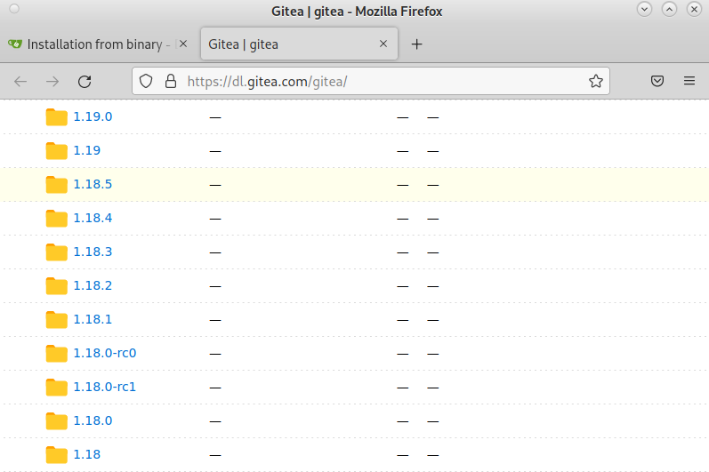 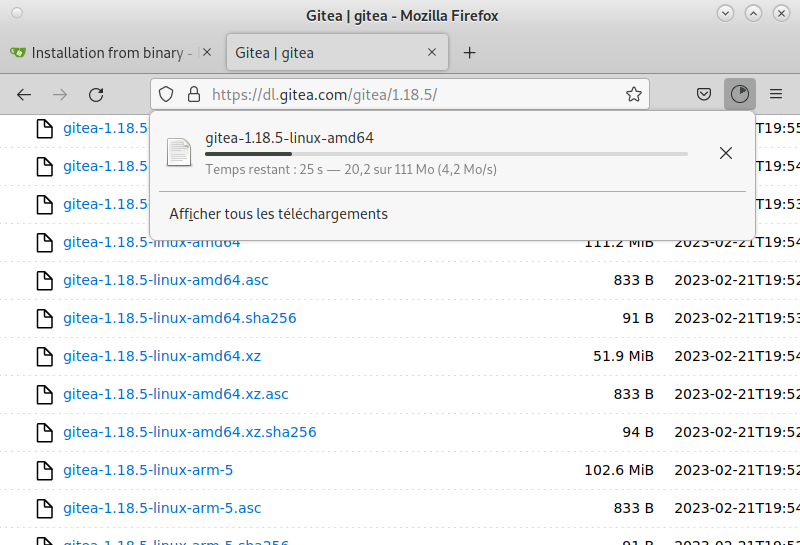
wget -O gitea https://dl.gitea.com/gitea/1.21.7/gitea-1.21.7-linux-amd64
chmod +x gitea
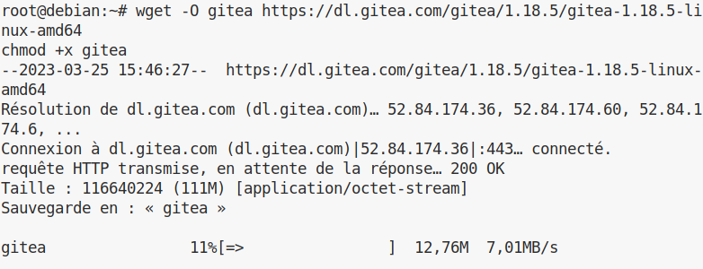
Cette installation a donc créé un fichier “gitea”, dans le fichier de l’utilisateur courant
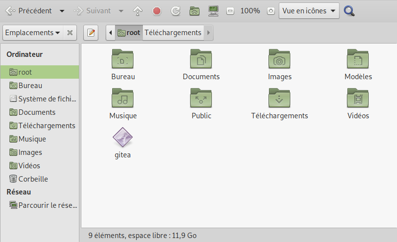
Il est important de vérifier que l’installation est bien faite, nous allons vérifier la Signature GPG [https://doc.ubuntu-fr.org/gnupg#:~:text=GPG%20est%20l’acronyme%20de,vous%20%C3%A0%20la%20page%20Seahorse.], pour cela il faut utiliser les commandes
gpg –keyserver keys.openpgp.org –recv 7C9E68152594688862D62AF62D9AE806EC1592E2
gpg –verify gitea-1.21.7-linux-amd64.asc gitea-1.21.7-linux-amd64
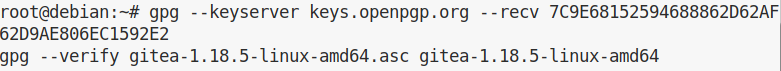
gitea pour démarrer, auras besoin d’un utilisateur qui pourra le démarrer, nous allons créer un utilisateur qui s’appelle “gitea” avec le mot de passe “gitea” et l’email “git@localhost”.
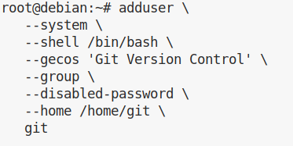
Ainsi que son répertoire ainsi que les accès à celui ci
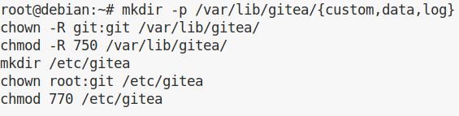
Et enfin l’export et la copie de ce répertoire, pour en faire la configuration
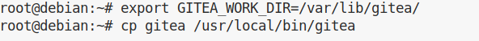
A partir de maintenant, Gitea est fonctionnel est utilisable, nous devons utiliser l’utilisateur précédemment créé pour le lancer
La version de Gitea actuellement installée est la version 1.21.7, nous pouvons vérifier la version via la commande
gitea -v
Le site officiel nous guide pour la mise a jour de Gitea[https://docs.gitea.io/en-us/upgrade-from-gitea/]
Nous nous intéresserons à la mise a jour avec un Gitea en fichier binaire, il faut :
Et voilà, notre Gitea est à jour.